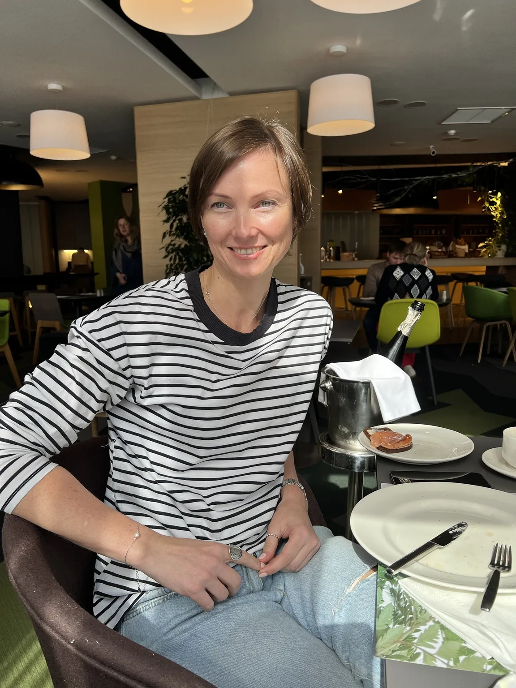
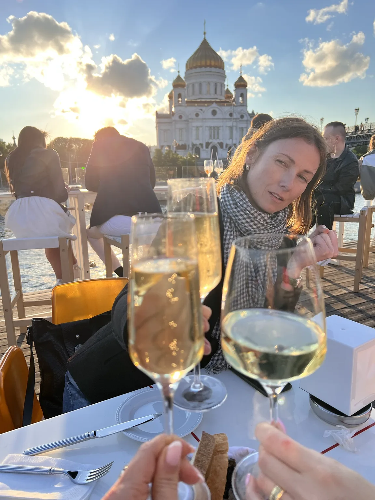
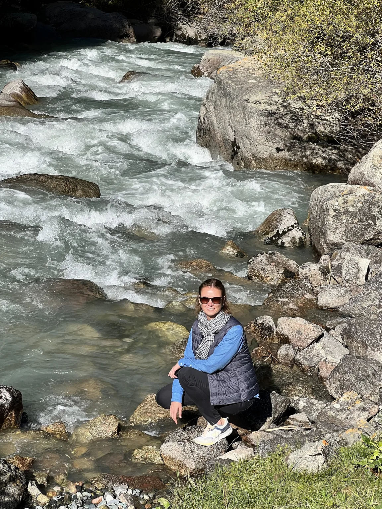
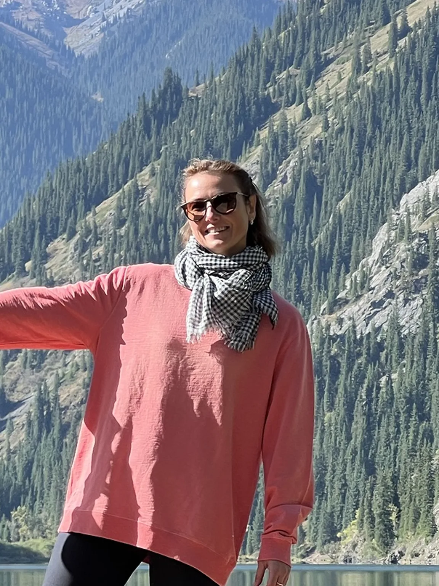
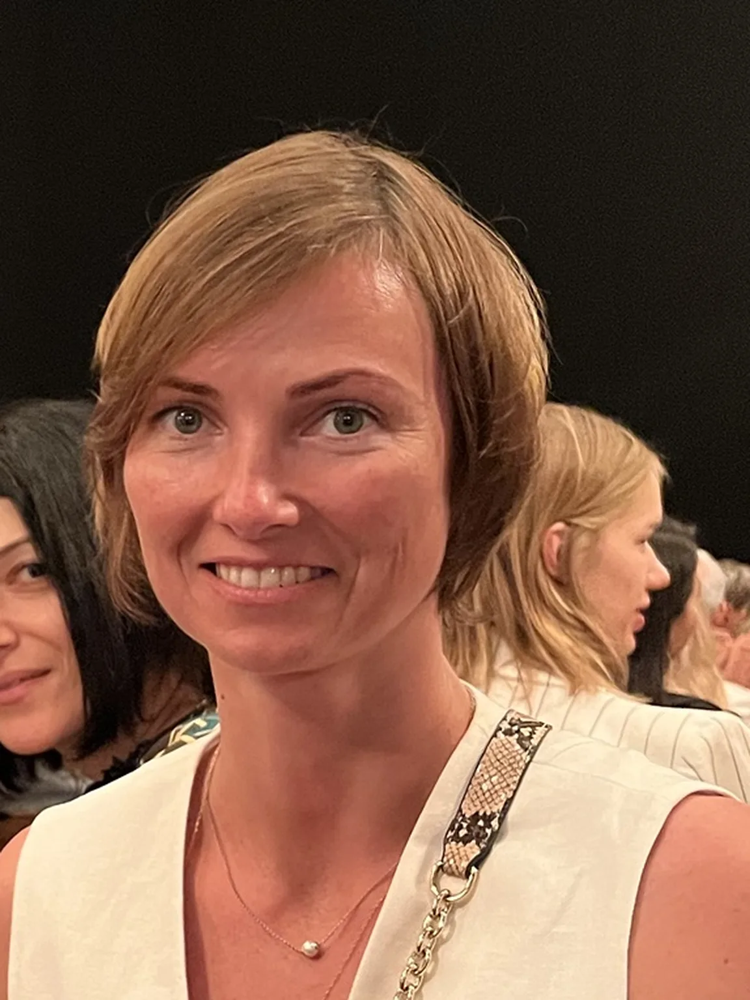
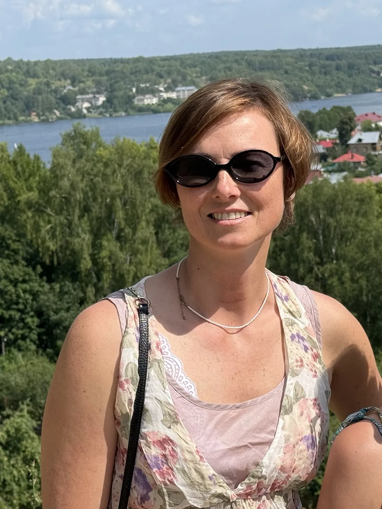
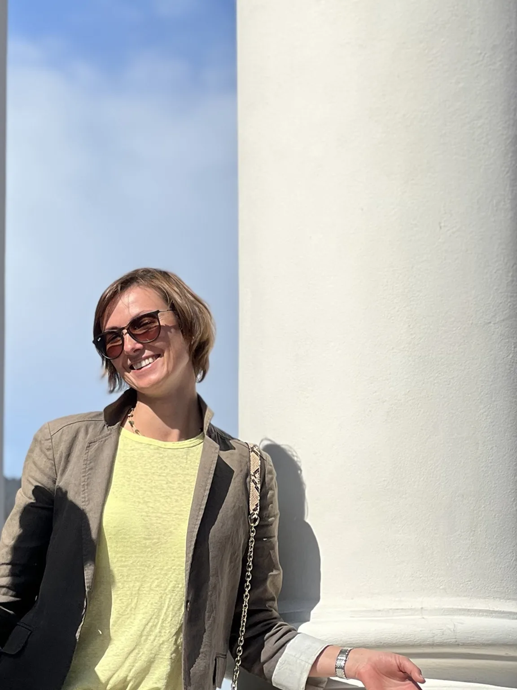
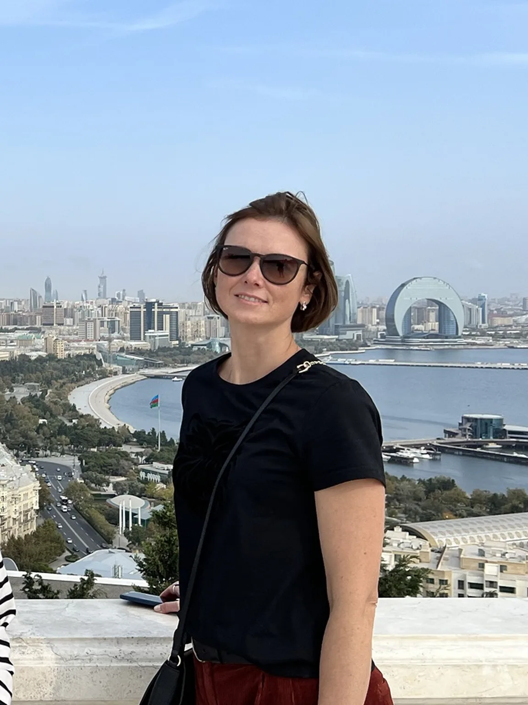
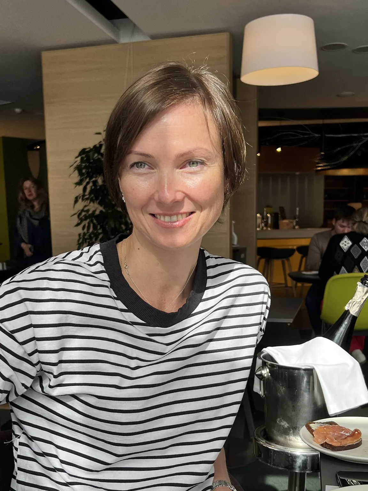

Содержание
Выбери интересующую тему. Каждый раздел можно открыть отдельно.
Твои сильные стороны
Три образа звучат в твоей матрице громче остальных: Шут, Сила и Справедливость. Вместе они рисуют человека, который любит свободу и новое, умеет держать себя в руках и при этом тонко чувствует меру и красоту.
Важно не терять лёгкость в повседневных заботах и не превращать внутреннюю силу в привычку справляться со всем в одиночку.
Что видно в твоей матрице целиком
Шут — образ свободы, любопытства и готовности пробовать новое — стоит в начале твоей матрицы. Скорее всего, тебе бывает тесно в одних и тех же рамках: хочется нового маршрута, нового занятия, нового способа что-то сделать.
Сила встречается в матрице дважды — в личной и в семейной линии. Это спокойная внутренняя выносливость: умение не метаться, а держаться своего. Справедливость тоже звучит дважды, в центре матрицы и в семейной линии: стремление к ясности, мере и ощущению «вот так правильно».
Колесница, образ движения вперёд, показывает твоё главное жизненное направление, а Император — опору и порядок. Вместе они дают сочетание, которое встречается нечасто: тебе важно двигаться, но на прочном основании.
А общий итог матрицы — Умеренность: умение соединять разное. Движение и покой, свободу и ответственность, дело и красоту.

Шут — свобода и творчество
В матрице Шут — это свобода, любопытство и умение начинать с чистого листа. В жизни это может выглядеть как тяга к творчеству руками: краски, эксперименты с цветом и формой, возможность создать что-то своё, а не по инструкции.
Такое творчество — не обязательно профессия или цель. Это способ отдохнуть, выдохнуть и вспомнить, что не всё в жизни должно быть полезным.
Сильные стороны
- Готовность пробовать новое.
- Свежий, нестандартный взгляд.
- Умение удивляться и увлекаться.
Важно: у Шута есть и обратная сторона — желание бросить начатое, когда стало неинтересно. Это нормально. Не каждая идея должна стать законченным проектом.

Сила — спокойная выносливость
В матрице Сила — это не про давление и не про «собраться и терпеть». Это спокойная уверенность, умение управлять собой и мягко, но твёрдо идти своим путём.
Этой теме хорошо созвучен спорт: он даёт ощущение тела, внутренний стержень и дисциплину, которая приносит радость, а не усталость. Тебе, вероятно, нравится ощущение «я могу» — на тренировке, на тропе, на воде.
Сильные стороны
- Выносливость и самообладание.
- Умение сохранять спокойствие в сложной ситуации.
- Внутренний стержень без жёсткости.
Важно: настоящая сила включает и умение отдыхать. Просить о помощи — тоже проявление силы.

Колесница — движение вперёд
Колесница — это движение, инициатива и выбор направления. В твоей матрице она отвечает за общую жизненную задачу: идти вперёд, выбирать свой маршрут и не застревать.
В жизни это могут быть поездки, горы, новые места, спортивные цели и просто привычка не стоять на месте.
Что помогает
- Ясная цель — пусть даже небольшая.
- Свои правила: куда и в каком темпе двигаться.
- Отдых как часть пути.
Важно: Колесница не про гонку. Иногда лучший способ ехать дальше — остановиться и сверить направление.

Справедливость — вкус и чувство меры
Справедливость в матрице — это ясные принципы, рассудительность и чувство баланса. Это перекликается с развитым эстетическим вкусом: ты, скорее всего, быстро замечаешь, что гармонично, а что «режет глаз» — в одежде, пространстве, цвете, детали.
Образ Влюблённых в семейной линии добавляет к этому умение выбирать сердцем: людей, места, вещи, которые по-настоящему откликаются.
Сильные стороны
- Чувство пропорции и стиля.
- Внимательность к деталям.
- Умение выбирать главное и отказываться от лишнего.
Важно: у Справедливости есть и обратная сторона — можно бесконечно взвешивать и сомневаться. Иногда полезнее выбрать и начать, чем ещё раз всё обдумать.

Император — опора и ремесло
Император в матрице — это структура, ответственность и умение строить прочное. В твоей жизни он звучит как внутренний порядок, надёжность и способность довести дело до результата.
С этим хорошо сочетается работа с деревом: она требует и воображения, и точности, и терпения. Материал не терпит спешки, а результат можно потрогать руками — это именно та радость, которую любит эта энергия.
Сильные стороны
- Организованность и надёжность.
- Умение работать с материалом и формой.
- Терпение к долгому процессу.
Важно: порядок нужен, чтобы освободить место для творчества, а не чтобы всё контролировать.

Что поддерживает баланс
Свобода и порядок
Шут и Император в одной матрице — это тяга к новому и потребность в устойчивости. Оба нужны: порядок даёт опору, свобода — воздух.
Движение и покой
Колесница тянет вперёд, а Сила напоминает: восстановление — часть пути.
Чувствительность и опора
Образ Луны в семейной линии говорит о тонкой чувствительности: ты, вероятно, хорошо ощущаешь настроение людей и места. Тишина и время наедине с собой помогают восстановиться.

Текущий этап: около 47–50 лет
Матрица делит жизнь на периоды, и у каждого из них своя тема. Нынешнему возрасту соответствуют два образа: Сила и Колесница. Сила — спокойная уверенность и опора на себя. Колесница — движение и выбор направления.
Это хорошее время, чтобы уделять больше внимания спорту, путешествиям и творчеству: тому, что наполняет энергией. Необязательно менять жизнь радикально — достаточно пересмотреть приоритеты и дать больше места тому, что хочется сохранить и развивать.
Колесница к тому же твоя постоянная жизненная тема, поэтому в этот период она звучит особенно ясно.

Практические рекомендации
Для тела
Выбирать нагрузку, которая радует, и оставлять время на восстановление.
Для творчества
Регулярно возвращаться к краскам и дереву — без обязательства делать «хорошо» или «на продажу».
Для вкуса
Чаще бывать там, где красиво: выставки, архитектура, красивые места. Вкус тренируется впечатлениями.
Для движения
Запланировать поездку или маршрут, который давно хочется пройти.
Для равновесия
Не пытаться делать всё сразу: выбрать один-два ориентира и дать им время.

Лёгкость — это тоже сила.
Можно двигаться вперёд и творить, не теряя опоры внутри.
↑ К содержанию